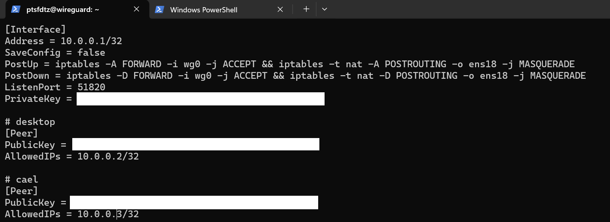

我的笔记
language learn
markdown
Markdown 是一种可以使用普通文本编辑器编写的标记语言，通过简单的标记语法，它可以使普通文本内容具有一定的格式。
- 编辑器的使用
vscode或者 typora
typora付费的 markdown 专用编辑器
- 插件安装
Markdown shortcuts
Auto-Open Markdown Preview
Markdown All in One
markdown 常用语法
- 标题
使用 # 号可表示 1-6 级标题
# 一级标题
## 二级标题
### 三级标题
...
- 段落
- 字体
_斜体文字_
**粗体文字**
**_粗斜体文字_**
- 分割线
---
- 删除线
~~Delete~~
Delete
- 下划线
<u>text</u>
<u>text</u>
- 脚注
[^text]：
1：脚注
- 列表
- 无序列表
- 第一项
- 第二项
- 第三项
- 有序列表
1. 第一项
2. 第二项
3. 第三项
- 列表嵌套
1. 第一项：
- 第一项嵌套的第一个元素
- 第一项嵌套的第二个元素
- 代码框
```python
print('Markdown')
def test():
print('Markdown test!')
```
$(document).read(function () {
alert("Markdown");
});
- 链接
[链接名称](链接地址)
- 高级链接
[Markdown][markdown]
[markdown]: http://www.markdown.com
- 图片


- 表格
| 表头 | 表头 |
| ------ | ------ |
| 单元格 | 单元格 |
| 单元格 | 单元格 |
| 表头 | 表头 |
|---|---|
| 单元格 | 单元格 |
| 单元格 | 单元格 |
JavaScript
tool use
Powershell
一.开启 powershell
-
win + R输入 pwsh -
管理员身份运行
ctrl + shift + enter
PowerShell 升级和 Windows Terminal 配置
- 查看 powershell 当前版本
$psversiontable
- 更新 powershell
查询 powershell
winget search powershell
- 下载微软版
winget install Microsoft.PowerShell
- 打开 json 文件

修改为
###
"defaultProfile": "{574e775e-4f2a-5b96-ac1e-a2962a402336}",
###
"list":
[
{
"guid": "{574e775e-4f2a-5b96-ac1e-a2962a402336}",
"hidden": false,
"name": "PowerShell",
"source": "Windows.Terminal.PowershellCore"
},
]
二.文件相关命令
- 进入文件夹
cd ./
- 返回上级目录
cd ..
- 创建新文件
mkdir
- 删除文件
rm
- 移动文件
mv
- 使用 vscode 打开文件
code .
- 清空回收站
clear-RecycleBin -Force
三. 常用命令
环境变量
- 显示环境变量
gci env:
- 设置环境变量
$env:Path += <address>
网络配置
- 显示本机 ip
ipconfig
- 测试网络链接
ping <IP>
- 关闭防火墙
netsh advfirewall set allprofiles state off
- 显示网络统计信息
netstat -an
- 显示本地路由表
route print
- 配置防火墙规则
Get-NetFirewallRule
Git
一.安装 Git
- 官网下载
- 终端下载
winget install --id Git.Git -e --source winget
二.配置 Git
在 powershell 中输入git检测是否配置完成
配置用户
- 初始化 Git 仓库
git init
- 设置用户名和邮箱
git config user.name 'github用户名'
git config user.email '邮箱'
- 查看邮箱用户配置
git config --list
- 配置 git
进入 gitconfig 文件
vim ~/.gitconfig
添加以下内容
[user]
name=ptsfdtz
email=pitousanfadetuzi@gmail.com
[http]
proxy=http://127.0.0.1:7890
[https]
proxy=http://127.0.0.1:7890
[init]
defaultBranch=main
[pull]
ff=only
令 git 使用 clash 代理
三.初次提交模板
- 项目初始化
git init
echo "# README" > README.md
git add README.md
git commit -m "First commit"
- 添加远程仓库链接
git remote add origin #仓库链接
- 默认分支 main
git branch -M main
- 提交到 github 仓库
git push -f -u origin main
四.常用命令
- 查看当前状态
git status
- 查看提交记录
git log
- 回退到上一个版本
git reset --hard HEAD^
- 回退到上上个版本
git reset --hard HEAD^^
- 回退到指定版本
git reset --hard HEAD^^
- 分支相关的操作
git branch ##查看分支
git branch <name> ##创建分支
git checkout <name> ##切换分支
git checkout -b <name> ##创建+切换分支
git merge <name> ##合并某分支到当前分支
git merge --no-ff -m "..." <name> ##使用普通模式合并分支，可以显示合并历史
git branch (-m | -M) <oldbranch> <newbranch> ##重命名分支
git branch -d <name> ##删除分支
git branch -D <name> ##强行删除未合并分支
git log --graph ##查看分支合并图
git log --graph --pretty=oneline --abbrev-commit ##也可以查看分支合并图
git tag <num>
git push --tags
Docker
一.Docker 下载
windows:docker
ubuntu:
curl -fsSL https://test.docker.com -o test-docker.sh
sudo sh test-docker.sh
Docker 允许你在容器内运行应用程序， 使用 docker run 命令来在容器内运行一个应用程序。
输出 Hello world
二. 常用命令
启动一个容器:
docker run -d -p 80:80 --name webserver nginx
列出正在运行的容器：
docker ps
停止一个容器：
docker stop <CONTAINER_ID>
启动一个停止的容器：
docker start <CONTAINER_ID>
删除一个容器：
docker rm <CONTAINER_ID>
列出所有镜像：
docker images
从 Docker Hub 拉取镜像：
docker pull <IMAGE_NAME>
删除一个镜像：
docker rmi <IMAGE_ID>
查看容器日志：
docker logs <CONTAINER_ID>
获取镜像
- 从 Docker 镜像仓库获取镜像
docker pull [选项] [Docker Registry 地址[:端口号]/]仓库名[:标签]
- 使用 Docker 镜像
docker run httpd
wireguard
一.安装 wireguard
在服务端安装
- 获取 root 权限
sudo i
- 安装 wireguard 软件
apt install wireguard resolvconf -y
二.配置服务端
配置服务端公钥和私钥
- 创建一个文件夹储存公钥和私钥
cd wireguard/clients/
mkdir example
cd example
wg genkey | tee private.key | wg pubkey > public.key #创建example的私钥和公钥
- 进入配置文件路径
sudo vim /etc/wireguard/wg0.conf
- 使用下面的命令查看你的默认网卡：
ip route list table main default
如果网卡不正确更改默认网卡 将 eth0 改为enp4s0
- 添加私钥和公钥 添加以下配置：
[Interface]
PrivateKey = client_private_key
Address = 10.0.0.2/32
DNS = 114.114.114.114, 223.5.5.5
[Peer]
PublicKey = server_public_key
Endpoint = server_ip:51820
AllowedIPs = 0.0.0.0/0
PersistentKeepalive = 25

允许端口转发
- 进入配置文件
sudo vim /etc/sysctl.conf
- 取消注释以下内容
net.ipv4.ip_forward=1
- 重启或者输入以下命令
sudo sysctl -p
查询方式
- 显示所有生成的密钥
cat private.key #显示私钥
cat public.key #显示公钥
- 显示用户组
sudo wg
三.下载客户端
https://www.wireguard.com/install/
四.配置客户端
配置客户端对应私钥和公钥
-
打开客户端软件 新建隧道
-
在配置文件添加
[Interface]
PrivateKey = client_private_key
Address = 10.0.0.2/32
DNS = 114.114.114.114, 223.5.5.5
[Peer]
PublicKey = server_public_key
Endpoint = server_ip:51820
AllowedIPs = 0.0.0.0/0
PersistentKeepalive = 25 #必须添加每25ms相应一次
五.启动服务
开机自启
- 打开开机自启
systemctl enable wg-quick@wg0
- 关闭开机自启
sudo systemctl disable wg-quick@wg0
- 查询自启状态
systemctl status wg-quick@wg0
启动 wireguard
#启动wg0
wg-quick up wg0
#关闭wg0
wg-quick down wg0
Vim
下载
vim:下载链接
winget search vim
winget install vim.vim
vim 键盘图

命令模式
-
i:切换到输入模式 -
x:删除字符 -
::切换到底线命令模式 -
dd:删除当前行 -
yy:复制当前行 -
u:撤销上一次操作 -
:w:保存文件 -
:q:退出 vim 编辑器 -
:q!:强制退出 -
:wq:保存并退出 -
:wq!:强制保存并退出
输入模式
输入时比较符合直觉
ESC:退出输入模式
qBittorent
安装 qBittorent
Ubuntu 或者 Debian:
apt install -y qbittorrent-nox
CentOS:
yum install -y qbittorrent-nox
启动
安装完成后启动 qBittorrent：
qbittorrent-nox
访问地址、用户名、密码：
******** Information ********
To control qBittorrent, access the Web UI at http://localhost:8080
The Web UI administrator user name is: admin
The Web UI administrator password is still the default one: adminadmin
This is a security risk, please consider changing your password from program preferences
让 qBittorrent 启动后在后台运行可以输入：
qbittorrent-nox -d
常用命令
启动 qBittorrent：
qbittorrent-nox
在后台启动 qBittorrent：
qbittorrent-nox -d
查看版本：
qbittorrent-nox -v
启动 qBittorrent 并指定 Web 面板的端口：
qbittorrent-nox --webui-port=2333
上面指定 2333 端口。
查看帮助：
qbittorrent-nox -h
build
mdbook
- 安装 mdbook
- 配置 mdbook 环境
配置你的下载文件到环境变量中Path路径中
- 安装 vscode 预览插件
vscode 拓展中下载
-
Markdown All in One
-
Markdown Preview Enhanced
- mdbook 编译和预览
- 编译 mdbook
mdbook build
mdbook build -o
-预览 mdbook
mdbook watch -o
mdbook 会自动编译项目，无需手动编译
react
- 安装 node.js
https://nodejs.org/en
- 搭建 React 脚手架
npx create-react-app my-react-app
- 启动本地开发服务器
npm start
- 项目初始化
openwrt
安装镜像
树莓派
- 安装 Raspberry Pi Imager
https://www.raspberrypi.com/software/
- 使用ssh远程服务
开启 SSH 服务，设置 username and password，配置 WiFi
- 用户名
user - 密码
password
- 固件升级
sudo apt update
sudo apt full-upgrade
linux
常用命令
- 列出当前目录下文件
ls
- 输出当前目录
pwd
- 改变目录
cd
- 新建目录
mkdir
- 显示文件内容
cat
- 删除目录
rm
- 移动目录
mv
- 复制目录
cp
- 显示在终端输入内容
echo
- 读取系统时间
date
- 全面搜索正则表达式
grep
- 显示命令使用手册
man
- 以root权限执行
sudo
- 运行
./program
- 安装软件包
apt-get
- 退出
exit
- 重新启动
reboot
vim
git
下载git
sudo apt update
sudo apt install git